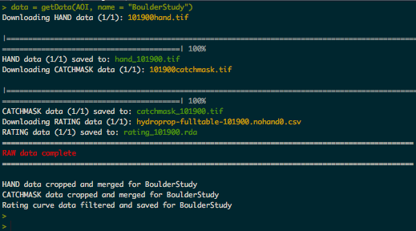
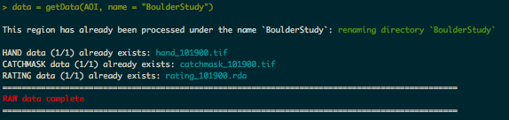
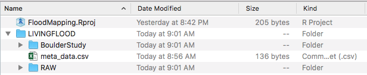
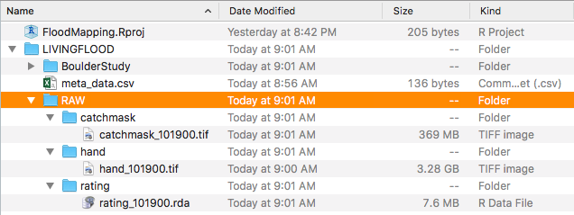

getData.RmdTo reduce the size of the data needed,LivingFlood has been designed to compliment the AOI package. AOI allows users to define an area of interest by a location and/or boundng box dimisions to yeild a spatial geometry. A detailed look at this process can be found here. For this example we are interested in the 100 square mile regions surrounding Boulder, Colorado.
AOI = getAOI(list("Boulder", 10, 10))To make sure that our AOI is defined as we hoped we can use the AOI::check() fucntion:
check(AOI)All looks good! We will use this AOI for the rest of the examples
With a defined AOI now need to grab the needed HAND data. Specifically we need three prodcts.
All of these will be collected and processed using the getData function. Depending on your internet connection this process can take a while as some rasters are over a GB in size. Fortunatly, if you are set up in a RStudio Project this step will only have to e carried out once.
The required input is an AOI geometry. Optionally, a name can be provided for the region, this name will be used to archive the processed data in your main working directory. If left NULL the name “RegionXXX” will be used starting at ‘Region001’ and increasing by one for each new AOI processed.
data = getData(AOI, name = "BoulderStudy")
As previously mentioned the convince of this porgram and sticking to the RProj folder is that if you try to download the same file again, the raw directory is checked first and only the needed files are downloaded.
data = getData(AOI, name = "BoulderStudy")
Once downloaded you should check the RProj folder. In it you will find a top level directory called LIVINGFLOOD. In it you will find three subdirectories/files.

The csv is a dynamic file that updates according to the contents of the LIVINGFLOOD directory. Looking at this file we’ll see the name of the region processed, the center latitute and longitude corrdinates; the height and width in miles of the geometry, the associated HUC unit, and the number of unique NHD reaches. Not only is this file useful for reference and for reporducing AOI calls, but it is used to avoid ducplicating downlaods. Before any downlaod occurs the getData script referecnes this file and stops if the data has already been processed. Even if you change the name the program will recongnize the geometry and stop the program while renmaing the folder to match the new name.
read.csv("./LIVINGFLOOD/meta_data.csv")#> name latCent lngCent height width origin HUC6 nhd_num
#> 1 BoulderStudy 40.01499 -105.2705 10 10 center 101900 95data = getData(AOI, name = "Boulder100mile2")
read.csv("./LIVINGFLOOD/meta_data.csv")#> name latCent lngCent height width origin HUC6 nhd_num
#> 1 Boulder100mile2 40.01499 -105.2705 10 10 center 101900 95data = getAOI('Denver') %>% getData(name = "denver")read.csv("./LIVINGFLOOD/meta_data.csv")
#> name latCent lngCent height width origin HUC6 nhd_num
#> 1 Boulder100mile2 40.01499 -105.2705 10 10 center 101900 95
#> 2 denver 39.76434 -104.8551 21 27 center 101900 284Looking more closly at the RAW folder we find three sub folders each with HAND, CATCHMASK, or RATING-CURVE raw data for all regions that have been requested in the past. These are stored here so that any new region within a HUC6 that has already been procesedded can be quickly processed:
